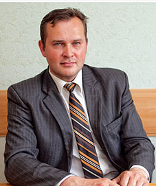

Меню
Сотрудники кафедры агробизнеса
ЛЕВКИН ЕВГЕНИЙ АНАТОЛЬЕВИЧ
И. о. заведующего кафедрой,
кандидат сельскохозяйственных наук, доцент
Родился 17 января 1977 года в г. Великие Луки. В 1999 году окончил зооинженерный
факультет Витебской государственной академии ветеринарной медицины с отличием и в том же году
поступил в очную аспирантуру при БелНИИЖ. С 2002 по 2003 год работал младшим научным сотрудником
отдела «Селекция и разведение свиней» РУП «Институт животноводства НАН Беларуси». С 2004 года
работает доцентом кафедры экономики и организации сельскохозяйственного производства ВГАВМ.
Под руководством доктора с.-х. наук, академика НАН Беларуси, профессора Шейко И.П., доктора
с.-х. наук Денисевича В.Л. выполнил диссертацию на тему «Эффективность использования хряков
породы пьетрен в сочетании с животными белорусской черно-пестрой породы» (получен патент).
С февраля 2009 по февраль 2011 года прошел переподготовку в УО БГАТУ по специальности «Экономика
и управление на предприятиях АПК» с присвоением квалификации «Экономист».
С сентября 2019 года исполняет обязанности заведующего кафедрой агробизнеса.
Лично и в соавторстве опубликовал более 85 научных работ, из них 10 учебно-методического
характера, в том числе 1 монография. Подготовил 71 дипломника.
МИКУЛИЧ
АЛЕКСЕЙ ВАСИЛЬЕВИЧ
доктор экономических наук,
профессор
Родился 13 июня 1953 г. в д. Оздамичи Столинского района. В 1968 г. закончил 8
классов Оздамичской средней школы и поступил в Речицкий зооветеренарный техникум, который
закончил в 1972 г. получив квалификацию ветеринарного фельдшера. С марта 1972 г. по ноябрь 1973
г. работал и.о. заведующего Болотненским ветучастком Рогачевского района Гомельской области. С
ноября 1973 по ноябрь 1975 служба в рядах Советской Армии.
С апреля 1976 г. по июль 1980 г. главный ветврач колхоза «Дружба» Столинского района. С июля
1980 г. по август 1986 г заместитель председателя колхоза «Первое Мая» Столинского района. В
августе 1986 г. назначен директором КУП «Маньковичи» Столинского района, где работает по
настоящее время.
В 1982 г. закончил УО ГГАУ по специальности «Зоотехния», в 1998 г. Академию управления при
Президенте РБ, по специальности «Государственное управление».
В 1991 – 1995 гг. избирался депутатом Столинского районного Совета, 1995-1999 гг. депутатом
Брестского областного Совета. С июля 1996 г. по настоящее время – член Столинского районного
исполнительного комитета. В 2010 г. избран депутатом Брестского областного Совета депутатов.
Избирался делегатом 1,2 и 4 Всебелорусского народного собрания.
Указом Президиума Верховного Совета СССР от 7 июля 1986 г. награжден медалью «За трудовое
отличие», неоднократно награждался грамотами Брестского областного Совета и областного
исполнительного комитета, Министерства сельского хозяйства и продовольствия РБ.
В 2001 г. защитил кандидатскую диссертацию, 2010 г. – докторскую диссертацию по специальности
«Экономика и управление народным хозяйством». В феврале 2013 г. присвоено ученое звание
профессора по специальности – «Экономика».
С 2001 г. по 2006 г. по совместительству работал доцентом кафедры «Экономики и управления
предприятиями АПК» БГЭУ.
С 2006 г. по 2011 г. по совместительству работал доцентом, а затем профессором кафедры
«Экономики и управления предприятиями АПК» УО «Полесский государственный университет».
С 2011 г. по настоящее время работает по совместительству профессором кафедры агробизнеса УО
«Витебская Ордена «Знак Почета» государственная академия ветеринарной медицины».
Опубликовал более 100 печатных работ учебно-методического характера, в т.ч. 5 монографий, из них
4 единолично.
БАЗЫЛЕВ МИХАИЛ ВЛАДИМИРОВИЧ
кандидат сельскохозяйственных наук, доцент
Родился 8 февраля 1978 года в Витебске. В 1995 году окончил среднюю школу и
поступил в Витебскую государственную академию ветеринарной медицины, которую с отличием окончил
в 2000 году по специальности «Зоотехния». После окончания академии поступил в аспирантуру при
кафедре зоогигиены и в 2004 г. защитил кандидатскую диссертацию на тему: «Продуктивность и
резистентность птицы кросса «Беларусь – 9» при введении в рацион местной минеральной
добавки».
С июня 2003 по сентябрь 2004 года работал ассистентом кафедры зоогигиены, с сентября 2004 года
переведен на должность ассистента кафедры экономики и организации сельскохозяйственного
производства. С июня 2005 года избран на должность доцента этой же кафедры. В 2007 году
присвоено ученое звание доцента. С 2005 по 2019 год являлся заведующим кафедрой экономики и
организации с.-х. производства. С 2019 года – доцент кафедры агробизнеса.
С февраля 2009 по февраль 2011 года с отличием прошел переподготовку в УО БГАТУ по специальности
«Экономика и управление на предприятиях АПК» с присвоением квалификации «Экономист».
Опубликовал более 200 печатных работ, в т.ч. 1 практическое пособие, 6 монографии, 60
учебно-методических пособий и 5 рекомендации производству. Под его руководством выполнено и
успешно защищено 67 дипломных работ.
КУЗНЕЦОВА ТАМАРА СТАНИСЛАВОВНА
кандидат сельскохозяйственных наук, доцент
В 1983 году окончила зооинженерный факультет Витебского ветеринарного института.
После окончания работала в Коткозерском зверосовхозе Олонецкого района Петрозаводской области
зоотехником отделения и главным зоотехником подсобного хозяйства в/ч 09655 пос. Горячие Ручьи
Мурманской области. С 1990 года работала на кафедре кормления сельскохозяйственных животных им.
профессора В.Ф. Лемеша старшим лаборантом. С 2000 года избрана на должность ассистента этой же
кафедры. В 2004 году защитила кандидатскую диссертацию на тему “Продуктивные и
физиолого-биохимические показатели яичных кур при использовании ячменно-пшеничных
комбикормов”.
С февраля 2006 года работала ассистентом кафедры экономики и организации сельскохозяйственного
производства. В феврале 2007 года избрана на должность доцента.
Является автором 45 научных работ, из них 11 учебно-методических пособий. Подготовила к защите
46 дипломников.
БОЛЬШАКОВА ЛЮДМИЛА ПАВЛОВНА кандидат сельскохозяйственных наук, доцент
Родилась 12 декабря 1960 года в д. Дрозды Лиозненского района. Трудовую
деятельность после окончания школы начала в 1979 году в должности лаборанта кафедры экономики и
организации сельскохозяйственного производства Витебского ветеринарного института. В 1987 году
окончила заочный факультет по специальности «Зоотехния» Витебского ветеринарного института и
была принята на должность старшего лаборанта, в 1994 году переведена ассистентом, в 2000 году
избрана на должность старшего преподавателя кафедры экономики и организации
сельскохозяйственного производства.
Ведет лекционный курс по дисциплинам «Экономика сельского хозяйства», «Делопроизводство».
В 2011 году защитила кандидатскую диссертацию по теме «Яичная продуктивность, качество яиц и
естественная резистентность кур-несушек при включении в рацион местных природных материалов». С
2012 года – доцент кафедры агробизнеса.
Опубликовала лично и в соавторстве 16 учебно-методических посо¬бий и 44 статьи. Подготовила 43
дипломника.
ЛИНЬКОВ ВЛАДИМИР ВЛАДИМИРОВИЧ
кандидат сельскохозяйственных наук,
доцент
Родился 21 апреля 1962 года в г. Слуцке Минской области. В 1984 году окончил
агрономический факультет УО БГСХА г. Горки по специальности «Селекция и семеноводство». В 1991
году – очную аспирантуру, защитил диссертацию на соискание учёной степени кандидата
сельскохозяйственных наук. С 2001 года работал ассистентом кафедры сельскохозяйственной
радиологии УО БГСХА. С 2004 по 2008 год работал начальником отдела воспитательной работы УО
БГСХА, исполнял обязанности проректора по воспитательной и информационной работе.
В 2008 году работал ассистентом кафедры кормопроизводства УО ВГАВМ. В 2009 – 2010 гг. –
директором Аграрного колледжа УО ВГАВМ.
С 2010 года работает на кафедре агробизнеса, в 2014 году присвоено звание доцента. Автор более
100 публикаций, в том числе 3 авторских монографии и 15 учебно-методических пособий. Имеется 1
патент Республики Беларусь. Подготовил 20 дипломников.
ОРЕШЕНКОВ АЛЕКСАНДР АЛЕКСАНДРОВИЧ
кандидат экономических наук,
доцент
Родился 3 января 1967 г. в г. Витебске. В 1991 г. с отличием окончил
экономико-технологический факультет Витебского технологического института легкой промышленности
(ВТИЛП). После окончания ВТИЛП работал ассистентом на кафедре управления и организации
производства, с 1997 г. доцентом кафедры экономической теории и маркетинга Витебского
государственного технологического университета.
В 1995 г. защитил диссертацию на соискание ученой степени кандидата экономических наук по
специальности «Экономика и управление народным хозяйством». В 1999 г. получил ученое звание
доцента по специальности «Экономика». С 2004 по 2007 г. докторант Белорусского государственного
экономического университета. С сентября 2017 г. доцент кафедры агробизнеса УО ВГАВМ.
Опубликовал 116 научных работ, в том числе 3 монографии, из них 2 единолично.
ХАНЧИНА АЛЛА РАДИОНОВНА
старший преподаватель
Родилась 12 ноября 1968 года в д. Сиротино Шумилинского района. В 1985 году
окончила Сиротинскую среднюю школу и поступила в Витебский ветеринарный институт на
зооинженерный факультет. После его окончания в 1990 году принята на должность лаборанта кафедры
акушерства ВГАВМ. В 1999 году переведена на кафедру частного животноводства на должность
старшего лаборанта.
В 2001 году окончила с отличием созданный при УО «ВГУ им. П.М. Машерова» институт переподготовки
кадров с присвоением квалификации «экономист-менеджер». Переведена на должность ассистента
кафедры экономики и организации сельскохозяйственного производства ВГАВМ.
В 2018 году защитила кандидатскую диссертацию на соискание ученой степени кандидата
сельскохозяйственных наук по теме «Репродуктивная функция быков-производителей при использовании
йодона».
В апреле 2019 года переведена на должность старшего преподавателя кафедры агробизнеса.
Лично и в соавторстве опубликовала более 30 научных работ, 5 учебно-методических пособия.
ЗУБАРЕВА ЕКАТЕРИНА ВАСИЛЬЕВНА
специалист по сопровождению
образовательного процесса
Родилась 17 января 1988 года в г. Слуцке. В 2010 году окончила факультет бизнеса
и права Белорусской государственной сельско-хозяйственной академии по специальности «Маркетинг»
(квалификация «маркетолог-экономист»).
В августе 2010 года принята на должность заведующей кабинетом экономической информации и
оперативного управления, а с декабря 2017 года – ведущий лаборант кафедры экономики и
организации сельскохозяйственного производства.
С 2019 года – специалист по сопровождению образовательного процесса кафедры агробизнеса.
АНАНЬЕВА МАРИНА ВАЛЕРЬЕВНА
специалист по сопровождению
образовательного процесса
Родилась 8 октября 1987 года в Витебске. В 2010 году окончила УО «Витебская
ордена «Знак Почета» государственная академия ветеринарной медицины» по специальности
«Ветеринарная медицина».
С августа 2010 по февраль 2012 года работала ветеринарно-санитарным экспертом в ОАО
«Камайский-АГРО» Поставского района Витебской области.
С февраля 2012 года – лаборант кафедры экономики и организации сельскохозяйственного
производства ВГАВМ.
С 2018 года – специалист по сопровождению образовательного процесса кафедры агробизнеса.